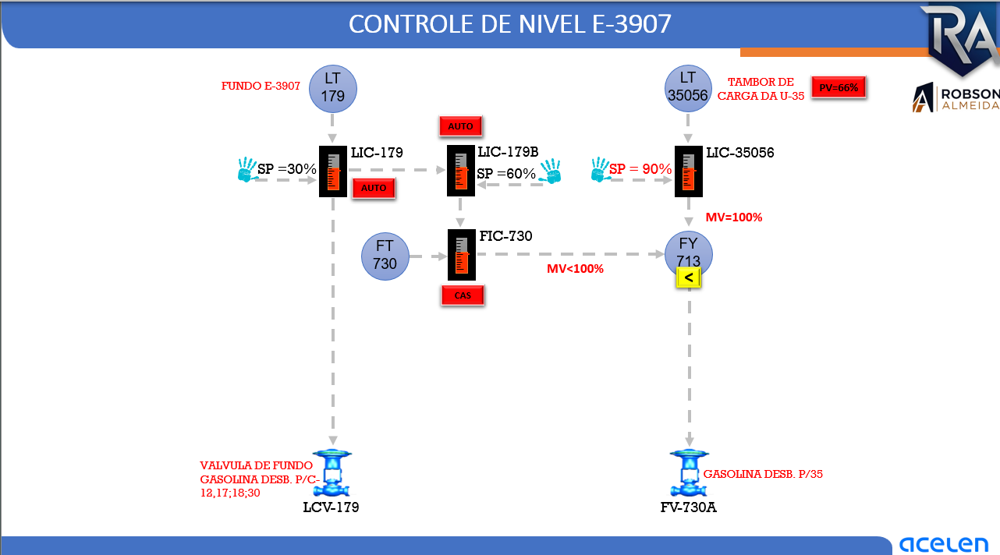

01 / CONTROLE PRIMÁRIO
SP de 30%
LIC-179 regula a saída pela LCV-179. A abertura cresce quando o nível medido supera o SP, considerada uma válvula com ação de aumento de vazão por abertura.
V2 refinada · duas hipóteses de ligação · diagnóstico de saturação · laboratório CIC
Entenda a interação entre LIC-179, LIC-179B, FIC-730, LIC-35056 e FY-713. Altere as variáveis de processo, imponha perturbações e observe a correção da malha em uma representação dinâmica de dois inventários interligados.
Baseado exclusivamente na imagem da malha. Volumes, vazões máximas, ações de controle, dinâmica e faixas de diagnóstico são parâmetros didáticos, não valores de engenharia da U-39. O desenho mostra LIC-179 → LIC-179B, mas não identifica o tipo do sinal: a V2 permite comparar as hipóteses MV do LIC-179 e PV do LT-179. Nenhuma substitui a conferência dos blocos do Centum VP. SP de 90% não é automaticamente intertravamento. Não utilizar a simulação para manobras, alarmes ou ajustes reais.
Toque nas lâmpadas de cada instrumento para abrir sua análise completa. O sinal efetivamente selecionado pelo FY-713 fica destacado.
↔ No celular, deslize para explorar a malha completa. A ligação tracejada “?” entre LIC-179 e LIC-179B é incerta; selecione a hipótese no laboratório para comparar as respostas.
LIC-179 regula a saída pela LCV-179. A abertura cresce quando o nível medido supera o SP, considerada uma válvula com ação de aumento de vazão por abertura.
LIC-179B estabelece o SP do FIC-730. A origem do sinal de entrada não está identificada no desenho; a V2 permite comparar MV do LIC-179 e PV LT-179.
LIC-35056 restringe a alimentação do tambor da U-35 por meio do FY-713. O menor sinal passa a comandar FV-730A.
As equações atualizam os dois inventários, a posição das válvulas e as quatro malhas a cada passo. Nada aqui modifica o processo real.
Acompanhe níveis físicos, retiradas e controlador com autoridade enquanto altera as variáveis.
O mímico representa uma relação física simplificada, não o P&ID real. A mudança do FY indica a troca de autoridade entre FIC-730 e LIC-35056.
Interfira no processo e acompanhe a resposta da malha.
Em MANUAL, sinais são usados como comandos didáticos. A configuração real de transferência sem solavanco, direcionalidade e limites precisa ser verificada no SDCD.
Busque o SP do LIC-179, mantenha o tambor com margem e feche os dois balanços. A estabilização é avaliada no tempo.
Janela móvel de até 15 min virtuais
Vazões reais versus demanda do FIC-730
Observe o momento em que o limitador da U-35 assume a prioridade.
Estabilizar o nível do fundo, sem perder a capacidade de recebimento da U-35; analisar restrições antes de elevar demandas.
Diagnósticos didáticos: faixas apresentadas nesta interface não são alarmes nem limites de intertravamento de planta.
Escolha um teste. Os valores mudam e o laboratório mantém as tendências para diagnóstico. Reinicie para restaurar o estado inicial.
O modelo mostrará a resposta e a decisão operacional que deve ser analisada.
Princípio de funcionamento, ações dos controladores, cascata, seletor e implicações de balanço de massa.
Interprete PV, SP e MV conjuntamente. Uma solicitação de abertura não garante vazão, e uma MV de 100% do limitador não significa válvula totalmente aberta.
Questões com alternativas tecnicamente próximas e extensão semelhante, sem padrão fixo de letra correta. O feedback explica a lógica de processo e as limitações da interpretação.
Não avalie apenas se a letra está correta. O operador deve reconhecer o controlador com autoridade, distinguir PV de MV, identificar limitações de vazão e verificar o balanço entre produção, retirada da E-3907 e consumo da U-35. As questões não substituem treinamento operacional regulamentado.
Material explicativo não resumido, hipóteses explícitas e a imagem da malha enviada para a análise.
Fonte fornecida pelo usuário. A reprodução a seguir não é uma transcrição verificada da lógica do SDCD.

Abrir ampliação da malha ↗